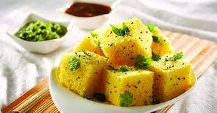
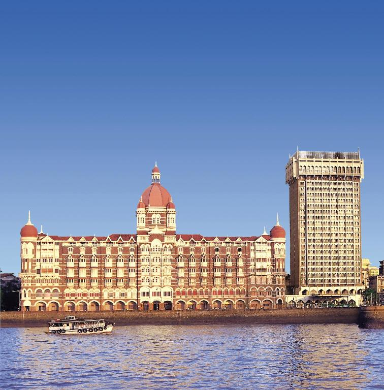

Latest Posts

Surat City Famous Dish
Dish name is Khaman. One of the best dish in the surat , if you ever came to this place then taste this dish , it is so delcious.

Surat City
This City is known to be a Diamond City. Huge Industries for Diamonds.

Mumbai City
The Traffic city but worht it because one of the best place to travel here and visit the Taj hotel.